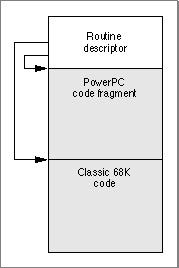

Legacy Document
Important: The information in this document is obsolete and should not be used for new development.
Important: The information in this document is obsolete and should not be used for new development.


Accelerated and Fat Resources
In some cases you may want to put an executable CFM-based code fragment into a resource to obtain a CFM-based version of a classic 68K stand-alone code module. For example, you might recompile an existing Hypercard XCMD (eXternal CoMmanD) procedure (which is stored in a resource of type'XCMD') into PowerPC code. However, because the Hypercard application that calls your XCMD procedure could be classic 68K code, a mode switch to the PowerPC environment might be required before your definition procedure can be executed. As a result, you need to add a routine descriptor at the beginning of the resource, as shown in Figure 7-1. These kinds of resources are called accelerated resources because they are faster implementations of their classic 68K counterparts. You can transparently replace classic 68K code resources with accelerated PowerPC code resources without having to change the software (for example, an application) that uses them.Figure 7-1 The structure of an accelerated resource
The routine descriptor is necessary for the Mixed Mode Manager to know whether it needs to change modes in order to execute the code. The routine descriptor also lets the Mixed Mode Manager know whether it needs to call the Code Fragment Manager to prepare the fragment.
- IMPORTANT
- Storing CFM-based code in resources is generally not recommended and should be done only in cases where you have no control over the code that calls it. If you are designing a plug-in interface, the plug-ins should be stored in the data fork.

The
procDescriptorfield of the routine record--contained in theroutineRecordsfield of the routine descriptor--should contain the offset from the beginning of the resource (that is, the beginning of the routine descriptor) to the beginning of the executable code fragment. In addition, the routine flags for the specified code should have thekProcDescriptorIsRelativebit set, indicating that the address is relative, not absolute. If the code contained in the resource is CFM-based code, you should also set thekFragmentNeedsPreparingbit.You can also create fat resources, that is, resources containing both classic 68K and PowerPC versions of some routine. Figure 7-2 shows the general structure of such a resource.
Figure 7-2 The structure of a fat resource

In this case, the routine descriptor contains two routine records in its
routineRecordsfield, one describing the classic 68K code and one describing the PowerPC code. As with any code-bearing resource, theprocDescriptorfield of each routine record should contain the offset from the beginning of the resource to the beginning of the appropriate code. The flags for both routine records should have thekProcDescriptorIsRelativeflag set, and the routine flags for the PowerPC routine record should have thekFragmentNeedsPreparingflag set.
Since a fat resource contains a routine descriptor at its entry point, it assumes that the host system contains the Mixed Mode Manager. If this is not the case, a problem can arise when the Mixed Mode trap is invoked. A solution is to create a variant called a safe fat resource, which begins with extra classic 68K code to check for the presence of the Mixed Mode Manager. If the Mixed Mode Manager is present, the code should move a routine descriptor to the beginning of the resource. If the Mixed Mode Manager is not present, it should add a branch instruction at the beginning to jump directly to the classic 68K portion of the resource. Thus the first call to the resource uses a few extra instruction cycles, but subsequent calls are faster.
- Note
- You can also create a fat resource that contains CFM-68K code and classic 68K code, although there are no obvious advantages. However, doing so may simplify static data access or code compatibility in some cases.

Sometimes it's useful to keep the executable code of a definition function in some location other than a resource. To do this, you need to create a stub definition resource that is of the type expected by the system software and that simply jumps to your code. For example, Listing 7-1 shows the Rez input for a stub list definition resource.
- Note
- In MPW, the interface file
MixedMode.rprovides Rez templates that you can use to create the accelerated resource shown in Figure 7-1 or the fat resource shown in Figure 7-2. The file also contains sample code for creating a safe fat resource.- WARNING
- Do not call accelerated resources at interrupt time. If the resource containing the code has not been prepared, the Code Fragment Manager will be called to do so, and the Code Fragment Manager cannot run at interrupt time.
Listing 7-1 Rez input for a stub list definition resource
data 'LDEF' (128, "MyCustomLDEF", preload, locked) { /*need to fill in destination address before using this stub*/ $"41FA 0006"/*LEA PC+8, A0;A0 <- ptr to destination address*/ $"2050" /*MOVEA.L (A0), A0;AO <- destination address*/ $"4ED0" /*JMP (A0) ;jump to destination address*/ $"00000000" /*destination address*/ };Your application (or other software) is responsible for filling in the destination address before the list definition procedure is called by the List Manager. For classic 68K code, the destination address should be the address of the list definition procedure itself. For PowerPC-based code, the destination address should be a universal procedure pointer (that is, the address of a routine descriptor for the list definition procedure).It's important to understand the distinction between accelerated resources and a normal resource-based fragment (sometimes called a private resource), so that you know when to create them and how to load and execute the code they contain. An accelerated resource is any resource containing PowerPC code that has a single entry point at the top (the routine descriptor) and that models the traditional behavior of a classic 68K stand-alone code resource. There are many examples, including menu definition procedures (stored in resources of type
'MDEF'), control definition functions (stored in resources of type'CDEF'), window definition functions (stored in resources of type'WDEF'), list definition procedures (stored in resources of type'LDEF'), HyperCard extensions (stored in resources of type'XCMD'), and so forth. A private resource is any other kind of executable resource whose code is called directly by your application.In most cases, you don't need to do anything special to get the system software to recognize your accelerated resource and to call it at the appropriate time. For example, the Menu Manager automatically loads a custom menu definition procedure into memory when you call
GetMenufor a menu whose'MENU'resource specifies that menu definition procedure. Similarly, HyperCard calls code like that shown in Listing 7-2 to load a resource of type'XCMD'into memory and execute the code it contains.Listing 7-2 Using an accelerated resource
Handle myHandle; XCmdBlock myParamBlock; myHandle = Get1NamedResource('XCMD', '\pMyXCMD'); HLock(myHandle); /*Fill in the fields of myParamBlock here.*/ CallXCMD(&myParamBlock, myHandle); HUnlock(myHandle);The caller of an accelerated resource executes the code either by jumping to the code (if the caller is classic 68K code) or by calling the Mixed Mode ManagerCallUniversalProcfunction (if the caller is PowerPC code). In either case, the Mixed Mode Manager calls the Code Fragment Manager to prepare the fragment, which is already loaded into memory. With accelerated resources, you don't need to call the Code Fragment Manager yourself. In fact, you don't need to do anything special at all for the system software to recognize and use your accelerated resource if you've built it correctly. This is because the system software is designed to look for, load, and execute those resources in the appropriate circumstances. In many cases, your application passes to the system software just a resource type and resource ID. The resource must begin with a routine descriptor, so that the dereferenced handle to the resource is a universal procedure pointer.The code shown in Listing 7-2 (or similar code for any other accelerated resource) can be executed multiple times with no appreciable performance loss. If the code resource remains in memory, the only overhead incurred by Listing 7-2 is to lock the code, fill in the parameter block, jump to the code, and then unlock it. However, because of the way in which the system software manages your accelerated resources, there are several important restrictions on their operation:
To allow accelerated PowerPC resources to be manipulated just like classic 68K code resources, the Mixed Mode Manager and the Code Fragment Manager cooperate to make sure that the code is ready to be executed when it is called. If the resource code hasn't been moved since it was prepared for execution, then no further action is necessary. If, however, the code resource has moved or been reloaded elsewhere in memory, some of the global data in the resource might have become invalid. To help avoid dangling pointers, the Code Fragment Manager always updates any pointers in the fragment's data section that are initialized at compile time and not modified at runtime.
- An accelerated resource cannot contain a termination routine, largely because the Code Fragment Manager does not know when the resource is released. The Code Fragment Manager effectively forgets about the connection to your resource as soon as it has prepared the resource for execution.
- An accelerated resource must contain a main symbol, which must be a procedure. For example, in an accelerated
'MDEF'resource, the main procedure must be the menu definition procedure itself (which typically dispatches to other routines contained in the resource).- You cannot call the Code Fragment Manager routine
FindSymbolto get information about the exported symbols in an accelerated resource. More generally, you cannot call any Code Fragment Manager routine that requires a connection ID as a parameter.- The fragment's data section is instantiated in place (that is, within the block of memory into which the resource itself is loaded). For in-place instantiation, you need to build an accelerated resource using an option that specifies that the data section of the fragment not be compressed. See the documentation for your software development system to determine how to specify uncompressed data sections.
- Accelerated resources can move in memory or be purged like classic 68K resources (note that the code in Listing 7-2 unlocks the
'XCMD'resource after executing it). If the resource moves between calls, some of the global data in the resource might become invalid. For example, a global pointer may end up dangling if the code or data it points to has moved.
The best way to avoid the global data restrictions on an accelerated resource is to put the global data used by the accelerated resource into an import library. Since the accelerated resource is a fragment, it can import both code and data from the library. The import library's code and data are fixed in memory, and the library is unloaded only when your application terminates, not when the accelerated resource is purged.
- IMPORTANT
- The Code Fragment Manager cannot update all global data references in an accelerated resource that has moved in memory. Therefore, an accelerated resource must not use global pointers (in C code, pointers declared as
externorstatic) that are either initialized at runtime or contained in dynamically allocated data structures to point to code or data contained in the resource itself. An accelerated resource can use uninitialized global data to point to objects in the heap. In addition, an accelerated resource can use global pointers that are initialized at compile time to point to functions, other global data, and literal strings, but these pointers cannot be modified at runtime.If you must declare global variables in your accelerated resource, you should check Listing 7-3 for examples of acceptable declarations. Note that these declarations assume the resource code does not change the values of the initialized variables.
Listing 7-3 Acceptable global declarations in an accelerated resource
int a; /*uninitialized; not modified if resource moves*/ Ptr myPtr; /*uninitialized; not modified if resource moves; */ /* can be assigned at runtime to point to heap object*/ Handle *h; /*uninitialized; not modified if resource moves; */ /* can be assigned at runtime to point to heap object*/ int *b = &a; /*updated each time resource moves*/ char *myStr = "Hello, world!";/*updated each time resource moves*/ extern int myProcA(), myProcB(); struct { int (*one)(); int (*two)(); char *str; } myRec = {myProcA, myProcB, "Hello again!"}; /*all three pointers are updated each time resource moves*/Listing 7-4 shows examples of data declarations and code that do not work in an accelerated resource that is moved or purged.Listing 7-4 Unacceptable global declarations and code in an accelerated resource
int a; int *b; int *c = &a; Ptr (*myPtr) (long) = NewPtr; static Ptr MyNewPtr(); struct myHeapStruct { int *b; Ptr (myPtr) (long); } *hs; b = &a; /*b does not contain &a after resource is moved*/ c = NULL; /*c does not contain NULL after resource is moved*/ c = (int *) NewPtr(4);/*dangling pointer after resource is moved*/ myPtr = MyNewPtr; /*dangling pointer after resource is moved*/ hs = NewPtr(sizeof(myHeapStruct)); /*hs still points to nonrelocatable heap block after move*/ hs->b = &a; /*hs->b will not point to global a after move*/ hs->myPtr = MyNewPtr; /*hs->myPtr will not point to MyNewPtr after move*/
© Apple Computer, Inc.
11 MARCH 1997